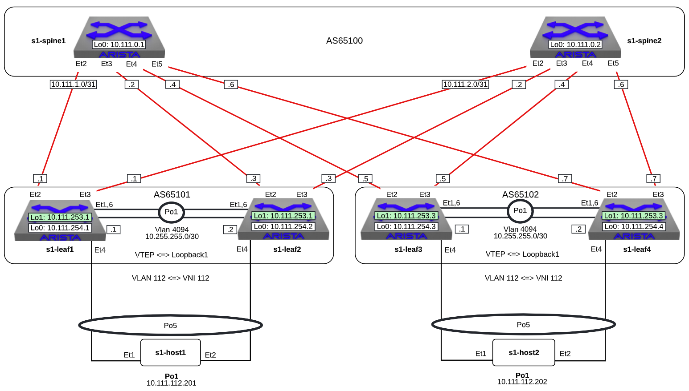

VxLAN

Note
Did you know the vxlan script is composed of Python code that uses the
CloudVision Portal REST API to automate the provisioning of CVP
configlets. The configlets that are configured via the REST API are
VXLAN_s1-spine1, VXLAN_s1-spine2, VXLAN_s1-leaf1,
VXLAN_s1-leaf2, VXLAN_s1-leaf3, VXLAN_s1-leaf4. In addition each
leaf also gets the VLANs configlet.
The manually-entered commands below that are part of this lab are
equivalent to VXLAN_s1-leaf4_complete
-
Log into the LabAccess jumpserver:
- Type
vxlanat the prompt. The script will configure the datacenter with the exception of s1-leaf4.
- Type
-
On s1-leaf4, configure Port-channels connecting to s1-host2
-
Verify MLAG on s1-leaf4
s1-leaf4(config)#show mlag MLAG Configuration: domain-id : MLAG local-interface : Vlan4094 peer-address : 10.255.255.1 peer-link : Port-Channel1 peer-config : inconsistent MLAG Status: state : Active negotiation status : Connected peer-link status : Up local-int status : Up system-id : 02:1c:73:c0:c6:14 dual-primary detection : Disabled dual-primary interface errdisabled : False MLAG Ports: Disabled : 0 Configured : 0 Inactive : 0 Active-partial : 0 Active-full : 1 s1-leaf4(config)#show mlag interfaces local/remote mlag desc state local remote status ---------- ---------- ----------------- ----------- ------------ ------------ 5 MLAG - HOST2 active-full Po5 Po5 up/up s1-leaf4(config)#show port-channel dense Flags -------------------------- ----------------------------- ------------------------- a - LACP Active p - LACP Passive * - static fallback F - Fallback enabled f - Fallback configured ^ - individual fallback U - In Use D - Down + - In-Sync - - Out-of-Sync i - incompatible with agg P - bundled in Po s - suspended G - Aggregable I - Individual S - ShortTimeout w - wait for agg E - Inactive. The number of configured port channels exceeds the config limit M - Exceeds maximum weight Number of channels in use: 2 Number of aggregators: 2 Port-Channel Protocol Ports ------------------ -------------- ------------------ Po1(U) LACP(a) Et1(PG+) Et6(PG+) Po5(U) LACP(a) Et4(PSG+) PEt4(P) -
Validate BGP operation s1-leaf4
s1-leaf4(config)#sh run sec bgp router bgp 65102 router-id 10.111.254.4 maximum-paths 2 neighbor SPINE peer group neighbor SPINE remote-as 65100 neighbor SPINE send-community standard extended neighbor 10.111.1.6 peer group SPINE neighbor 10.111.2.6 peer group SPINE neighbor 10.255.255.1 remote-as 65102 neighbor 10.255.255.1 next-hop-self network 10.111.112.0/24 network 10.111.134.0/24 network 10.111.254.4/32 s1-leaf4(config)#show ip route bgp VRF: default Codes: C - connected, S - static, K - kernel, O - OSPF, IA - OSPF inter area, E1 - OSPF external type 1, E2 - OSPF external type 2, N1 - OSPF NSSA external type 1, N2 - OSPF NSSA external type2, B - Other BGP Routes, B I - iBGP, B E - eBGP, R - RIP, I L1 - IS-IS level 1, I L2 - IS-IS level 2, O3 - OSPFv3, A B - BGP Aggregate, A O - OSPF Summary, NG - Nexthop Group Static Route, V - VXLAN Control Service, M - Martian, DH - DHCP client installed default route, DP - Dynamic Policy Route, L - VRF Leaked, G - gRIBI, RC - Route Cache Route B E 10.111.0.1/32 [200/0] via 10.111.1.6, Ethernet2 B E 10.111.0.2/32 [200/0] via 10.111.2.6, Ethernet3 B E 10.111.1.0/24 [200/0] via 10.111.1.6, Ethernet2 B E 10.111.2.0/24 [200/0] via 10.111.2.6, Ethernet3 B E 10.111.253.1/32 [200/0] via 10.111.1.6, Ethernet2 via 10.111.2.6, Ethernet3 B I 10.111.253.3/32 [200/0] via 10.255.255.1, Vlan4094 B E 10.111.254.1/32 [200/0] via 10.111.1.6, Ethernet2 via 10.111.2.6, Ethernet3 B E 10.111.254.2/32 [200/0] via 10.111.1.6, Ethernet2 via 10.111.2.6, Ethernet3 B I 10.111.254.3/32 [200/0] via 10.255.255.1, Vlan4094 s1-leaf4(config)#show ip interface brief Address Interface IP Address Status Protocol MTU Owner ----------------- --------------------- ------------ -------------- ----------- ------- Ethernet2 10.111.1.7/31 up up 1500 Ethernet3 10.111.2.7/31 up up 1500 Loopback0 10.111.254.4/32 up up 65535 Management0 192.168.0.15/24 up up 1500 Vlan112 10.111.112.1/24 up up 1500 Vlan134 10.111.134.1/24 up up 1500 Vlan4094 10.255.255.2/30 up up 1500 s1-leaf4(config)#show ip bgp summary BGP summary information for VRF default Router identifier 10.111.254.4, local AS number 65102 Neighbor Status Codes: m - Under maintenance Neighbor V AS MsgRcvd MsgSent InQ OutQ Up/Down State PfxRcd PfxAcc 10.111.1.6 4 65100 333 335 0 0 04:34:48 Estab 5 5 10.111.2.6 4 65100 329 332 0 0 04:34:58 Estab 6 6 10.255.255.1 4 65102 335 333 0 0 04:34:46 Estab 11 11Note
show ip bgp summarywill show that the BGP neighbors have moved toEstabstate. Note the iBGP peering between Leaf3 & Leaf4. Also note the route to the shared loopback1 of Leaf1 & Leaf2. This is the remote VTEP on the other side of the leaf-spine network. -
Create Loopback 1 and the VXLAN VTEP (VTI) interfaces on s1-leaf4
-
Configuration
configure interface Loopback1 ip address 10.111.253.3/32 interface vxlan 1 vxlan source-interface loopback 1 vxlan vlan 112 vni 112 vxlan flood vtep 10.111.253.1Note
vxlan flood vtep 10.111.253.1adds the shared loopback1 IP address on Leaf1 & Leaf2 to the HER list. Note that for autodiscovery of VTEPs, one must use BGP eVPN (see eVPN labs) or CVX (see CVX lab). -
Verification
s1-leaf4(config)#show run int vxlan1 interface Vxlan1 vxlan source-interface Loopback1 vxlan udp-port 4789 vxlan vlan 112 vni 112 vxlan flood vtep 10.111.253.1 s1-leaf4(config-if-Vx1)#sh int vxlan 1 Vxlan1 is up, line protocol is up (connected) Hardware is Vxlan Source interface is Loopback1 and is active with 10.111.253.3 Replication/Flood Mode is headend with Flood List Source: CLI Remote MAC learning via Datapath VNI mapping to VLANs Static VLAN to VNI mapping is [12, 112] Note: All Dynamic VLANs used by VCS are internal VLANs. Use 'show vxlan vni' for details. Static VRF to VNI mapping is not configured Headend replication flood vtep list is: 12 10.111.253.1 MLAG Shared Router MAC is 0000.0000.0000
-
-
Log into s1-host1 and s1-host2, ping the vARP VIP and the other host
-
Host 1 ping tests. From s1-host1:
Note
The TTL in the ping outputs above. Even though .202 is many switches away, it appears locally connected and has the same TTL as the ping to .1. It\'s also interesting to realize that due to MLAG hashing of both the ARP requests and ping packet flows that pings to the SVI addresses of .2 & .3 may or may not work. Do you know why?
-
Host 1 MAC/ARP information
s1-host1#show interfaces po1 | grep -i Hardware Hardware is Port-Channel, address is 001c.73c0.c616 s1-host1#show arp Address Age (sec) Hardware Addr Interface 192.168.0.1 0:00:00 124e.b1e1.7180 Management0 192.168.0.5 0:00:05 001c.73a0.c601 Management0 10.111.112.1 0:38:05 001c.7300.0001 Port-Channel1 10.111.112.202 0:14:05 001c.73c0.c617 Port-Channel1Note
Note the MAC addresses returned by the commands above.
-
Host 2 ping tests. From s1-host2:
Note
Note the TTL in the ping outputs above. Even though .201 is many switches away, it appears locally connected and has the same TTL as the ping to .1. Also note that the vARP VIP (10.111.112.1) address & and vARP MAC address (00:1c:73:00:00:ff) are the same for both leaf pairs - this IP address is known as an AnyCast IP address. If a VM was motioning from s1-host1 to s1-host2 for maintenance, the default GW address nor the ARP cache on that VM need to change.
-
Host 2 MAC/ARP information
Note
Note the MAC addresses returned by the commands above and compare to the prior
grepandarpcommands and see that both hosts appear to each other as though they are on the same L2 broadcast domain. For a little extra fun, as you are running the pings from host1, on another set of windows for s1-leaf1 & s1-leaf2 runclear countersthen runwatch 1 diff show int e4 counterand see how MLAG hashing across the different pings causes the packets to choose a particular member of the port-channel in both the outbound & inbound ping flows.
-
-
Verification -- on s1-leaf1/2 and s1-leaf3/4
-
Verify the MAC addresses and the associated VTEP IP
s1-leaf1#show vxlan vtep Remote VTEPS for Vxlan1: VTEP Tunnel Type(s) ------------------ -------------- 10.111.253.3 unicast, flood Total number of remote VTEPS: 1 s1-leaf1#show vxlan address-table Vxlan Mac Address Table ---------------------------------------------------------------------- VLAN Mac Address Type Prt VTEP Moves Last Move ---- ----------- ---- --- ---- ----- --------- 112 001c.73c0.c617 DYNAMIC Vx1 10.111.253.3 1 0:01:13 ago Total Remote Mac Addresses for this criterion: 1s1-leaf4(config)#show vxlan vtep Remote VTEPS for Vxlan1: VTEP Tunnel Type(s) ------------------ -------------- 10.111.253.1 unicast, flood Total number of remote VTEPS: 1 s1-leaf4(config)#show vxlan address-table Vxlan Mac Address Table ---------------------------------------------------------------------- VLAN Mac Address Type Prt VTEP Moves Last Move ---- ----------- ---- --- ---- ----- --------- 112 001c.73c0.c616 DYNAMIC Vx1 10.111.253.1 1 0:00:33 ago Total Remote Mac Addresses for this criterion: 1Note
For
show vxlan vtep&show vxlan address-tableto be populated, the abovepingsneed to have been active very recently so that the MAC addresses don\'t age out, and you\'ll notice that at least 1 (but not necessarily both) of the MLAG pair switches (s1-leaf1 or s1-leaf2) will have knowledge of the remote VTEP. This is because this is the direction the pings (inbound & outbound) last hashed. -
Verify the MAC address and the associated interface
-
-
Let's run some other show commands and tests to poke around VxLAN. On s1-leaf1 and s1-leaf4 issue the following commands:
LAB COMPLETE!